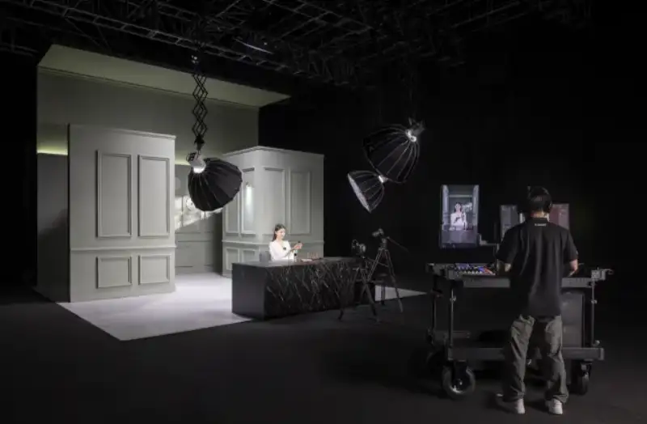
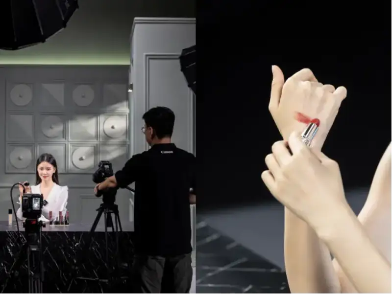
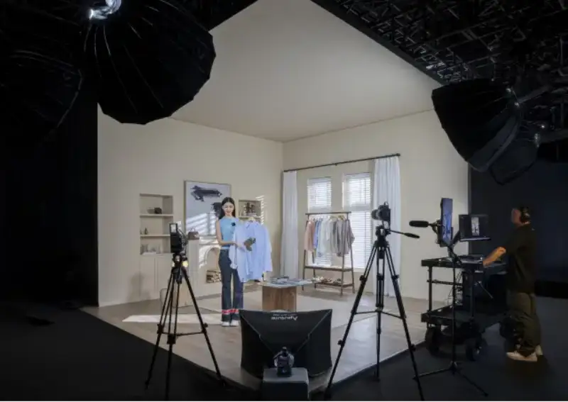
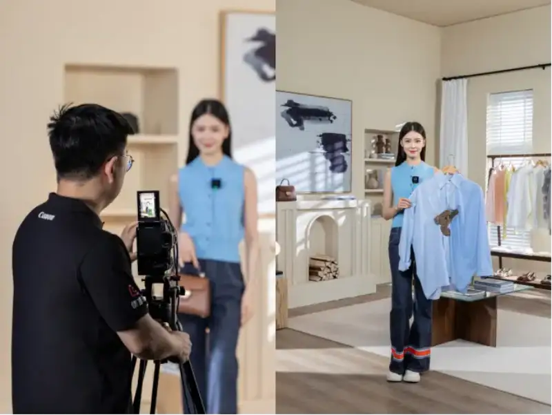
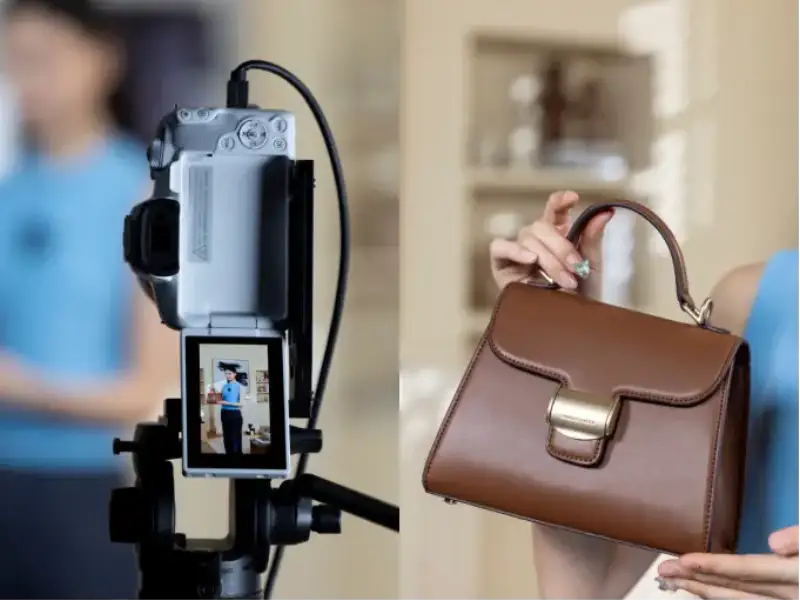
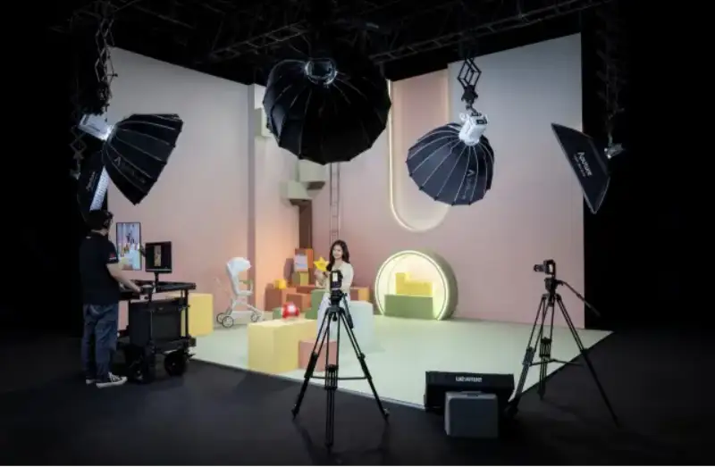
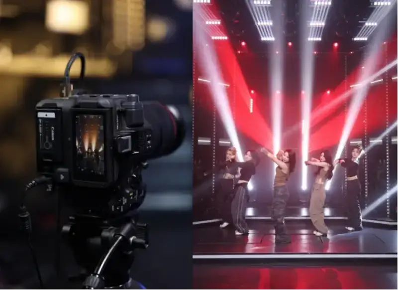
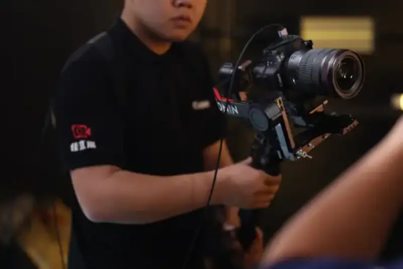

On November 28, 2024, Canon (China) Co., Ltd. announced the JiaLive Solution 2.0. Facing the future needs of the live streaming industry, and the rapid growth of new areas such as brand self-broadcasting, industrial-belt traceability streaming, and entertainment group streaming, Canon (1) draws on its latest product technology and broad experience to offer a new one-stop solution. The release of the JiaLive Solution 2.0 aims to help streaming users lower cost and at the same time achieve higher-quality results, so they can meet changing market demand.
Canon Launches the JiaLive Solution 2.0
JiaLive reads industry needs and leads change in live streaming
Since 2021, Canon has offered a professional brand for the live streaming industry called JiaLive. With more than 80 years of imaging history, Canon uses skillful combinations of light to give users advanced, textured live images that make their rooms stand out. On top of the professional image quality and strong color science of Canon imaging products, JiaLive has won industry recognition through one-stop solutions and professional service. JiaLive keeps innovating. It applies Canon's newest products and technology to live streaming, pushes the standardization of streaming technology, and leads change in the industry. In 2022, when the streaming industry lacked professional standards, Canon JiaLive and Taobao Live jointly released the Guide to High-Quality E-commerce Live Streaming, which is the JiaLive Solution 1.0. It helps users improve streaming quality under standardization and low-cost learning, and helps hosts start broadcasting easily.
In 2022, Canon JiaLive and Taobao Live jointly launched the JiaLive Solution 1.0.
As the streaming industry matures, live e-commerce enters a new era of quality streaming. Brand store broadcasting has become the main force, especially in beauty, apparel, and mother-and-baby products. The streaming room has become an important window to show products and interact with users. Demands for image texture, color reproduction, streaming stability, and cost keep rising. How to raise the user shopping experience through a professional streaming room has become a key focus for brands.
At the same time, under the new opportunity of the live-streaming-plus-industrial-belt model, new forms such as industrial-belt streaming and traceability streaming have appeared in large numbers. Production sites and factories become streaming rooms. This raises demands for equipment cost and ease of operation.
In addition, entertainment streaming, as an important part of the performance market, and especially stage group streaming, has gradually become popular with users. The investment in one stage group stream compares to a professional show, and it needs efficient cooperation on all sides. Streaming rooms raise higher demands for image quality, interactivity, and more. Many entertainment rooms often face problems such as flat image quality, unnatural skin color, low definition, and slow focus under complex lighting.
Facing these new trends and needs, Canon JiaLive innovated actively through market research and user feedback. Combined with many new products released in recent years, such as CINEMA EOS C80, EOS R5 C, EOS R5 Mark II, EOS R8, and EOS R50, paired with Canon's rich lens range, it launched the all-new JiaLive Solution 2.0. It helps streaming users solve their problems and opens a new era of quality streaming.
Brand beauty streaming room: EOS C80 plus EOS R50 dual-camera solution
In a beauty streaming room, the main camera is recommended to be the Canon EOS C80. It has a 6K full-frame back-illuminated stacked image sensor. Combined with Canon's color science, it makes beauty streaming clearer and more textured. The EOS C80 also offers a rich set of expansion interfaces, compatible with many streaming signal capture and camera control options. Recommended pairing is the RF35mm F1.4 L VCMprime lenswhich can markedly improve clarity, make the person stand out, and raise the layering of the image through smooth out-of-focus areas.

Scene of the brand beauty streaming solution
The cinema camera EOS C80 outputs a film-like texture
The close-up camera uses the Canon EOS R50, paired with the RF 24-105mm F4 L IS USMzoom lensto show the host's close-up and makeup detail, while clearly rendering the color and texture of beauty products. Product-demo mode further raises focus speed, making product display smoother. Switching between the two cameras needs no switcher, so the pace stays smooth and product explanation becomes more efficient.

The close-up camera captures detailed close-ups of the host's products. Color reproduction in the frame is precise, and product texture is clear.
Brand apparel streaming room: EOS R5 C plus EOS R50 dual-camera solution
In a brand apparel streaming room, the main camera is recommended to be theCanon EOS R5 C. It offers fine 8K oversampled image quality and a wide dynamic range, and it supports Canon Log 3 and on-board loading of custom LUT files. These features ensure precise reproduction of clothing colors in streaming, and raise the refined feel of the visuals. Paired with the RF15-35mm F2.8 L IS USM wide-angle lens, it naturally lengthens leg proportions through optical effect, so models look taller and more elegant. The large F2.8 aperture also helps the subject stand out and achieves a film-like fine texture.

Scene of the brand apparel streaming solution

Precise color reproduction. Even two products of similar color show clear differences in color and texture.
The close-up camera is recommended to be the Canon EOS R50, paired with the RF 24-105mm F4 L IS USM lens. Through product-demo mode, focus speed rises markedly, and the detail and texture of tailoring show clearly. This set works easily without a switcher, raises the conversion rate of the streaming room, and quickly empowers the brand.

Under EOS R50 product-demo mode, product texture shows clearly.
Brand mother-and-baby streaming room: EOS R8 plus EOS R50 dual-camera solution
In a brand mother-and-baby streaming room, the main camera is recommended to be the Canon EOS R8. The EOS R8 combines high image quality with low cost, simple operation, and a small, light body. Together with its full-frame image sensor, it can shoot portraits with strong blur and wide-angle streaming scenes. Recommended pairing is the RF35mm F1.4 L VCM prime lens, which raises clarity and image layering and draws viewers' attention to the product.

Scene of the brand mother-and-baby streaming solution
The close-up camera uses the Canon EOS R50. Product-demo mode raises focus speed, so product detail and the text on ingredient labels show clearly. Switching between the two cameras needs no switcher, operation is simple, viewer participation rises, and user dwell time increases.
The close-up camera shows product detail clearly.
High texture at low cost, handling real-scene and green-screen streaming with ease.
In the JiaLive Solution 2.0, Canon specially invited Wang Nan, a KOL in video and live image presentation, as the recommender for the JiaLive brand. Drawing on her broad streaming experience and deep understanding of the industry, she newly recommends two low-cost single- and dual-camera solutions for streaming types that demand lower cost and streaming space, such as industrial-belt streaming and traceability streaming.
Wang Nan (left), a KOL in video and live image presentation, gives a recommendation to users in a low-cost real-scene streaming room.
Low-cost real-scene streaming room: EOS R50 dual-camera solution
In a low-cost real-scene streaming room, the Canon EOS R50 is recommended. The EOS R50 offers high image quality and precisely renders the color and texture of people and products. Paired with the RF-S18-45mm F4.5-6.3 IS STM zoom lens, it reduces distortion in people and at the same time compresses space to a degree. This avoids the clutter of the room, raises the layering of the frame, makes the subject stand out, and gives the whole image a more film-like, refined feel.
With set design, even a small streaming space shows layering.
By turning on the close-up demo mode of the EOS R50, users experience a markedly faster focus speed, so product detail stands out more. This solution is not only economical but also widely applicable. It suits many streaming scenes such as paid knowledge, collectibles and jewelry, food, hairdressing, and beauty.
The close-up camera delivers fine image quality, and product detail stands out more.
Low-cost green-screen streaming room: EOS R50 single-camera solution
In a low-cost green-screen streaming room, the Canon EOS R50 is recommended as the main camera. Its strong image quality and dynamic range reproduce the colors of people and products truthfully, raising the visual effect of the stream. Paired with the RF35mm F1.8 MACRO IS STM prime lens, users reduce distortion and compress space, while raising image layering. The large aperture helps the subject stand out and creates a film-like texture.
Scene of the low-cost green-screen streaming solution
The close-up camera is also recommended to be the EOS R50, paired with the RF50mm F1.8 STM lens, to further raise focus efficiency and detail. Using a compact 40W fill light, users achieve a flexible lighting solution within a limited space. It is low in cost, small in size, and easy to set up.
Green-screen background (left and middle) and the output on the user side (right). With the EOS R50 streaming green-screen keying, the edges of the person are clearer.
Entertainment stage streaming room: EOS C80 plus EOS R5 Mark II three-camera solution
In entertainment stage streaming, the main camera and close-up camera are recommended to be the Canon EOS C80, paired with the RF24-70mm F2.8 L IS USM and RF70-200mm F2.8 L IS USM lenses. As a digital cinema camera, the EOS C80 delivers fine, cinema-grade image quality. Combined with three advanced base ISOs and a wide dynamic range, it renders dreamy, brilliant stage lighting well. Canon's skin-color technology is widely recognized by imaging professionals, and it shows performers' natural, clear, healthy skin tone.
Scene of the entertainment stage group-streaming solution
For focus, the EOS C80 uses advanced technology. It can automatically recognize and track the eyes, face, head, and body of a person. Even when the eyes, face, or head are blocked, the system still detects the body and keeps tracking. Thanks to this new focus technology, even fast spinning dance moves are tracked smoothly, so the performance flows.

The EOS C80 shows dreamy, brilliant stage lighting design better.
The roaming camera is recommended to be the Canon EOS R5 Mark II, paired with the RF15-35mm F2.8 L IS USM lens. This combination not only offers high image quality and high-precision tracking focus, but also raises mobility through its light body, so it suits flexible use on stage.

The small, light body of the EOS R5 Mark II lets roaming-camera staff operate it easily.
Professional and efficient, start streaming without worry. The JiaLive remote tuning service keeps watch over you.
A successful streaming room needs not only professional hardware. It also needs customized tuning service and personal detail settings based on the client's specific needs, to avoid a same-as-everyone result. JiaLive offers not only a sound product plan, but also online and offline professional streaming-room setup and tuning service. The JiaLive offline service team already covers 18 cities nationwide: Harbin, Shijiazhuang, Jinan, Lanzhou, Zhengzhou, Xi'an, Luoyang, Wenzhou, Shanghai, Hefei, Wuhan, Changsha, Hangzhou, Suzhou, Guangzhou, Xiamen, Shenzhen, and Chengdu. It can support streaming-room tuning needs at any time.
At the same time, if clients meet technical problems during a stream, they can book the JiaLive remote tuning service at any time. This service has four strengths: Canon quality, professional tuning, standard service, and fast response. Through a professional technical team and self-developed software, it achieves even coverage nationwide. The service covers color, lighting, image quality, and audio. It ensures second-by-second efficient tuning during the stream, breaks the limits of distance, and gives users economical one-stop technical support.
JiaLive online remote tuning service
The JiaLive Solution 2.0 released by Canon, with its low cost, high quality, and variety, leads a new era of quality streaming. This solution not only drives new change in the streaming industry, but also opens new possibilities for future growth. JiaLive will keep offering professional technical support, help the industry innovate, and create greater value for users.
About the Canon Group
Canon started business in 1937. Guided by its corporate philosophy of kyosei (living and working together), Canon sets itself the goal of creating world-class products, and keeps growing toward diversity and globalization. Today, Canon's business centers on optical technology, and covers a wide range of fields such as printing, imaging, medical, industrial, and other frontier businesses. The group headquarters in Tokyo links closely with the regional headquarters in the Americas, Europe, Asia, Oceania, and Japan, and builds a management system that combines globalization with localization. In 1996, Canon launched the Global Excellent Enterprise Group Concept, which aims to serve society through technology and to become a trusted and respected company worldwide. (Data as of March 2024.)
About Canon (China) Co., Ltd.
Canon's business in China began in the 1970s. From the earliest technical cooperation, to wholly owned factories, to the founding of a sales company, it explored many operating models. Starting with its first production factory in Dalian in 1989, and after years of effort, Canon's related companies in mainland China now cover production, research and development, and sales. In March 1997, Canon (China) Co., Ltd. was established, with full responsibility for Canon's sales work in the Chinese market. To date, Canon (China) has basically set up 13 branches, including the three regional headquarters of North China, East China, and South China, along with showrooms, quick-repair centers, and quick service stations. This forms a sales and service network covering the whole country. Its business covers imaging system products, office products, industrial equipment, and smart IT solutions, and it keeps expanding new business that fits the needs of Chinese consumers. Canon (China) is deeply rooted in the Chinese market, and aims to become a company that the Chinese people trust and respect. (Data as of March 2024.)